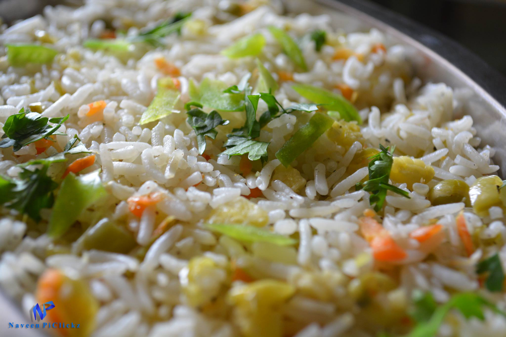

Veg fried rice is a delicious recipe, and even beginners can easily make it in short amount of time. Best for the times when you want to have something to eat as soon as possible, while also prioritizing your health.
Soak one cup of rice (190 to 200 grams) in water for 30 minutes. Then drain and set the rice aside.
In a large pot add 4 to 4.5 cups of water, 1/2 teaspoon salt, and 2 to 3 drops of cooking oil, and set over high heat on the stovetop.
Once the water reach a full boil, add the soaked and drained rice.
Simmer the rice uncovered on medium to medium-high heat.
Cook rice until al dente, or just about cooked. Do not overcook rice during this step.
Quickly strain rice in a colander, and let it cool completely at room temperature. Refrigerating rice for 30 minutes also helps. Simply cover cooked rice and refrigerate.
You can also rinse the rice with water so that the rice stops cooking. Use your hands to gently stir the cooked rice around while rinsing to ensure that every grain is cooled. Then drain thoroughly. Cover cooked rice and set aside to cool.
Finely chop these vegetables:
Now it's time to stir-fry the vegetables. Start by heating 3 tablespoons of preferred cooking oil in a wok or a deep skillet. Add 1 whole star anise and fry for a few seconds, until the oil becomes fragrant.
If you do not have star anise, simply skip adding it and move to step 12.
Then add 1 teaspoon of finely chopped garlic, and 1/2 teaspoon of finely chopped ginger. Cook for only a moment as you don't want to brown or burn the garlic.
Add the chopped spring onions, and sauté for a minute or two on medium-low to medium heat.
Then add the finely chopped french beans - or, add these before the onions if you want a softer bean texture.
Continue to stir-fry both the onions and french beans for 2 to 3 minutes over medium to medium-high heat.
Now add the remaining finely chopped veggies, including mushrooms and celery. Increase the heat to high to thoroughly cook all of the ingredients.
Continuously toss and stir while frying so that the veggies are uniformly cooked and do not get burnt – for about 4 to 6 minutes.
You want the vegetables to be cooked and fried but still retain some great crunch.
Once the veggies have cooked, add ½ tablespoon of soy sauce. Stir and mix well.
Tip: You can add less (½ to 1 teaspoon) or more (about 2 to 3 teaspoons) soy sauce if you prefer that. I recommend going for naturally brewed soy sauce or tamari.
Note: If you do not like or prefer soy sauce, then omit it adding to the dish.
Taste the dish, and then add ½ a teaspoon of ground black pepper and as much salt as you like.
You are now ready to put everything together to make the veg fried rice. To the wok or skillet of veggies add the cooked and cooled rice - 1 cup or so at a time.
Reduce the heat to medium or medium-high. Use a spoon or spatula to gently fold cooked rice into the mixed vegetables.
With the heat still on medium to medium-high, continue to gently mix and fry the vegetables with rice for a couple of minutes.
You now have the option to stir in 1 tablespoon of rice wine or rice vinegar (or other mild vinegar), if you like.
Lastly, add more fresh chopped spring onions. You can either sprinkle on top as a garnish or mix into the fried rice to incorporate.
Serve Veg Fried Rice hot by itself for a light yet hearty meal, or enjoy it as a side dish along with your other favorite Chinese recipes.